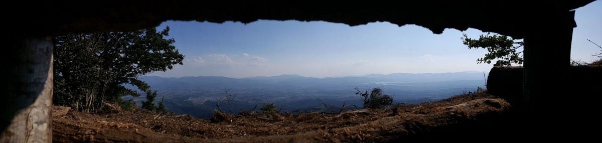

Percorso 10 · Storico
Mugello da difendere
Gli itinerari della Linea Gotica tra fortificazioni e battaglie
A PiediCon il Tuo Cane
A Piedi
- Durata
- 3/4 giorni
- Lunghezza
- 44 Km
- Difficoltà
- Difficile
- Dislivello
- 2665 Mt
Traccia (44,2 km)PartenzaArrivo
Porta il percorso con te
Scarica la traccia per il navigatore o per un'app come Komoot, OsmAnd o Wikiloc.
Sentieri e cammini attraversati
- Sentieri CAI
- nr. 00 - nr. 48 - nr. 50 - nr. 42 - nr. 38 - nr. 743 - nr. 739 - nr. 701 - nr. 505 - nr. 547
- Cammini
- SOFT 12 - Via degli Dei - Sentiero Italia - Grande Escursione Appenninica - SOFT 14 - SOFT 15
Descrizione del percorso
Leggi il racconto di Orme del Mugello
Il cammino inizia dal proprio dal grande Cimitero Militare Germanico sul Passo della Futa (903 m). Il Memoriale, immerso nell'Appennino Tosco-Emiliano, è uno dei più grandi luoghi di sepoltura militare in Italia. Situato lungo il crinale tra Toscana ed Emilia-Romagna, accoglie oltre 30.000 soldati tedeschi caduti tra il 1943 e il 1945 sulla Linea Gotica, la fortificazione difensiva nazista contro l’avanzata alleata. Inaugurato nel 1969 su progetto degli architetti Dieter Oesterlen e Robert Tischler, il memoriale si sviluppa su una collina terrazzata con una struttura circolare, simbolo della ciclicità della storia. Al centro si erge una croce di pietra, mentre le migliaia di lapidi in ardesia, disposte in modo austero, evocano il dramma della guerra senza retorica. La Futa, teatro di aspri scontri tra tedeschi, alleati e partigiani, oggi è meta di escursionisti e mountain biker. Il cimitero sorge lungo la Via degli Dei, un antico tracciato etrusco-romano che collega Bologna a Firenze, offrendo un’esperienza tra storia e natura. Il contrasto tra la quiete del paesaggio e il ricordo della guerra rende questo luogo una tappa di riflessione, dove il viaggio diventa anche un percorso nella memoria collettiva.
Seguendo il sentiero tra boschi di faggio, arriviamo sulla salita che ci conduce al Monte Gazzarro (1118 m), una delle vette più alte della zona. Dalla cima si gode di un panorama mozzafiato: da un lato, la valle del Mugello e le montagne che lo separano da Firenze, verso est, la piana di Firenze, il Monte Albano e nelle giornate limpide, la montagna pistoiese e le Apuane, verso nord si scorgono i colli bolognesi e verso est, la Valle del Santerno fino all’Adriatico. Sempre verso ovest, si puo’ ancora ammirare il Cimitero Germanico della Futa da cui siamo partiti. Al confine tra Mugello e Valle del Santerno, è una meta ideale per escursionisti e mountain biker grazie alla sua rete di sentieri. Il nome potrebbe derivare dal latino gazerium, riferendosi a boschi e pascoli. Per secoli, è stato un passaggio naturale per pastori, viandanti e pellegrini, oltre a fungere da collegamento tra Firenze e la Romagna. Durante la Seconda Guerra Mondiale, il monte fu teatro di scontri tra le truppe alleate e i nazifascisti lungo la Linea Gotica, diventando anche un rifugio per i partigiani. Oggi, lungo i sentieri, è ancora possibile trovare tracce di quel passato. Dalla cima si gode un panorama mozzafiato: da un lato il Mugello, dall’altro la Valle del Santerno fino all’Adriatico.
Si percorre una ripida discesa che in pochi chilometri ci porta al Passo dell’Osteria Bruciata (903 m). Questo era un tempo un nodo cruciale lungo l’antica via tra Firenze e Bologna. Attraversato da mercanti e pellegrini fin dal Medioevo, faceva parte di un complesso sistema viario preesistente alla Via Faentina e al Passo della Futa. Con il passare dei secoli e la costruzione di strade più agevoli, la sua importanza diminuì, ma oggi resta una meta suggestiva per escursionisti e mountain biker. Il passo deve il suo nome a una leggenda medievale: si narra che un’osteria nascondesse un terribile segreto. Scoperto l’orrore, l’osteria fu incendiata e abbandonata. Ancora oggi, la storia avvolge il passo in un’aura di mistero, rendendolo un luogo affascinante dove storia e leggenda si intrecciano tra i boschi appenninici.
la “macabra” Osteria
Un’antica leggenda, tramandata dagli anziani di tutto l’Alto Mugello, racconta di un’osteria malfamata dove, in tempi lontani, i viandanti andavano incontro a una sorte terribile. I poveri pellegrini che, dopo un’estenuante marcia, raggiungevano il crinale tra le vallate della Sieve e del Santerno, trovavano sul valico una locanda che, a prima vista, sembrava un’accogliente sosta dopo tanta fatica. Ma, secondo il macabro racconto, varcare quella soglia significava firmare la propria condanna. Di notte, infatti, poteva accadere l’impensabile: i viandanti venivano assassinati per un fine tanto orribile da sembrare uscito da un film dell’orrore. Le loro carni, infatti, finivano nei piatti serviti agli ignari ospiti del giorno successivo
Rimanendo sul sentiero, si passa in prossimità del Monte Castel Guerrino, un rilievo di 1117 metri, dove sorgeva un'importante roccaforte medievale. Situato in posizione strategica sull’Appennino Tosco-Romagnolo, appartenne agli Ubaldini, potente famiglia feudale che controllava le vie tra Toscana e Romagna. Nel 1350, le autorità ordinarono la costruzione di una torre difensiva, ma nel 1359 la rocca fu distrutta dai Fiorentini. Nel 1402, Giovanni Ubaldini eresse una bastia di legno durante la guerra contro Firenze, anch’essa demolita. Oggi, restano tracce delle fondamenta e una cisterna. La cima offre un interessante punto panoramico, non distante dalla vetta del monte. Uno degli scorci più spettacolari per ammirare la vallata sottostante. Nella tradizione popolare e contadina, il coprirsi di nuvole di Castel Guerrino, promette pioggia abbondante in poco tempo.
Continuando il percorso si giunge in un’area che un tempo era un piccolo lago, e pochi metri appena fuori il tracciato principale si arriva a Monticelli (861 m), dove avvenne uno dei capitoli più significativi della lotta per la liberazione dell’Italia durante la Seconda Guerra Mondiale. Il Generale Clark, comandante della 5ª Armata alleata, prese la decisione di sfondare la Linea Gotica proprio dal Passo del Giogo, un punto strategico cruciale per la difesa tedesca. La scelta di questo fronte, inaspettata da parte dell’esercito tedesco che si preparava invece per uno sfondamento dal Passo della Futa, divenne una mossa determinante nella battaglia per l'Italia centrale. Il 10 settembre 1944, l’esercito alleato, con una manovra sorprendente e un grande spiegamento di forze, attaccò il Passo del Giogo, riuscendo a creare una breccia di oltre 8 km nel sistema difensivo della Linea Gotica, segnando una vittoria strategica. La resistenza tedesca fu però imponente: le forze naziste, ben preparate, si concentrarono nel difendere posizioni chiave come Monticelli e il Monte Altuzzo, dove la resistenza divenne particolarmente feroce. La battaglia si protrasse per giorni con durissimi scontri, durante i quali le forze alleate, pur riuscendo a sfondare in alcuni punti, pagarono un prezzo altissimo. Il comandante Peabody e la sua compagnia avanzarono lungo il versante di Monte Altuzzo, trovandosi a fronteggiare resistenza feroce, compreso l’impiego di mitragliatrici e mortai da parte delle forze tedesche. Il 17 settembre venne finalmente conquistato il Monte Altuzzo, mentre il giorno successivo, 18 settembre, gli alleati riuscirono ad avanzare ulteriormente, malgrado le gravi perdite subite. La battaglia, che vide anche l’impegno degli inglesi come rinforzo, costò la vita a circa 3.000 soldati americani, con numerose perdite anche nel campo tedesco. La Linea Gotica era stata sfondata, ma la lotta era tutt’altro che finita.
Il contributo dei partigiani italiani fu essenziale: questi combattenti locali lottarono fianco a fianco con le forze alleate contro le postazioni tedesche, fornendo supporto nelle azioni di sabotaggio, nell'infiltrazione nelle retrovie nemiche e nel mantenimento della resistenza. Questi uomini, spesso lasciati soli e in condizioni di estrema difficoltà, furono protagonisti nel garantire che la resistenza sul territorio rimanesse viva e combattiva. I luoghi intorno a Monticelli, oggi testimonianza di quella lotta, raccontano ancora la violenza dei combattimenti. Bunker e trincee, come quella di Fonte Fredda (attualmente in fase di ricostruzione e scavo), sono visibili nei dintorni. I segni delle battaglie passate sono ancora presenti in crateri e nelle buche individuali lasciate dai soldati. Alcune postazioni di Monticelli sono ancora riconoscibili, e una delle aree più significative è quella dove il tenente Bruno Rossellini cadde, il cui nome è ora inciso su un monumento vicino all’osteria di Nandone. Accanto a questo, si trova la memoria di un altro eroe: il soldato Oscar G. Johnson, che, con un coraggio straordinario, si guadagnò la Medaglia d'Onore del Congresso degli Stati Uniti, respingendo da solo i contrattacchi nemici.
A 882 metri di altitudine, raggiungiamo il Passo del Giogo, che collega la piana fiorentina al Mugello e all’Appennino Tosco-Emiliano. Questo valico ha avuto un ruolo cruciale nei trasporti e nella difesa della regione, dall’epoca romana fino alla Seconda Guerra Mondiale. Nel XIV secolo, Firenze lo considerò strategico per proteggersi dalle minacce settentrionali, fondando Scarperia nel 1306 e Firenzuola nel 1332. Queste città fortificate garantirono il controllo delle vie commerciali e la sicurezza del territorio. Durante la Seconda Guerra Mondiale, il Passo del Giogo divenne un punto chiave della Linea Gotica. Una volta “sfondata” la Linea Gotica, gli Alleati riuscirono ad avanzare verso Bologna e ad accelerare la liberazione del nord Italia. Oggi, il Passo del Giogo conserva le tracce di questi eventi storici e rappresenta una meta significativa per escursionisti e appassionati di storia, offrendo un paesaggio suggestivo che unisce natura e memoria.
Dopo tanta storia, ci rituffiamo nei rigogliosi boschi del Mugello. Superiamo Capanna Marcone (bivacco sempre aperto), e attraversando in più punti il corso d’acqua dei Pianacci, si arriva all’iconica Cascata dell’Abbraccio, formata da un ramo laterale del torrente Rovigo. Questo spettacolare salto d’acqua, che si tuffa con forza dalle rocce circostanti, crea uno scenario suggestivo e affascinante. La particolare conformazione geologica della zona ha dato vita a un fenomeno naturale unico: l’erosione degli strati di roccia più morbida ha formato una grande caverna che si estende dietro la cascata, quasi a "abbracciarla", da cui il nome del luogo. Questa caratteristica offre ai visitatori un’esperienza rara e straordinaria: la possibilità di osservare la cascata non solo dal suo fronte, ma anche dall’interno, passando dietro l’acqua che scorre impetuosa. L’effetto è ancora più suggestivo durante l’inverno, quando l’acqua ghiaccia e dà vita a spettacolari formazioni di stalattiti di ghiaccio, creando un paesaggio ancora più affascinante e misterioso. Proseguendo la salita si arriva in poco tempo al Rifugio i Diacci. Incontriamo lungo il percorso un altro bivacco sempre aperto e a disposizione dell’escursionista, Ca’ di Cicci. Da segnalare una possibile deviazione del percorso principale, che porta alla Cascata del Rio Rovigo, conosciuta anche come del Tanagone; una delle meraviglie naturali dell'Appennino Tosco- Romagnolo. Formata dal torrente Rovigo, l’acqua precipita da una parete rocciosa creando un suggestivo laghetto ai piedi della cascata. Avvicinandosi, si percepisce un netto abbassamento della temperatura, rendendo l’atmosfera ancora più affascinante. Questa zona, già nota nel Medioevo, era attraversata da importanti vie di comunicazione. Si ipotizza che Giotto, ispirandosi ai paesaggi locali, possa aver raffigurato formazioni simili nella scena del "Miracolo della Sorgente" negli affreschi di Assisi.
Si arriva dunque al Passo della Sambuca (1061 m). Il passo ha una storia millenaria, risalente all’epoca etrusca e romana, quando serviva come via di comunicazione tra la Toscana e l’Adriatico. Nel Medioevo divenne un collegamento strategico tra Firenze, Faenza e Ravenna, con la Repubblica Fiorentina che nel XIV e XV secolo lo fortificò per proteggere i commerci. Nei secoli successivi, miglioramenti infrastrutturali resero il passo un punto chiave per trasporti e operazioni militari. Durante la Seconda Guerra Mondiale, divenne teatro di violenti scontri tra truppe tedesche in ritirata e partigiani, giocando un ruolo cruciale nella lotta per sfondare la Linea Gotica.
Ancora poche centinaia di metri di saliscendi ed inizia la lunga discesa verso Crespino sul Lamone, dove si è consumata durante la Seconda Guerra Mondiale, una delle pagine più buie della nostra storia: l’Eccidio di Crespino. Fu una strage nazifascista avvenuta tra il 17 e il 18 luglio 1944 nel comune di Marradi, in provincia di Firenze. Il 15 luglio, un soldato tedesco venne ucciso nei pressi di Crespino, provocando una perquisizione del paese alla ricerca di partigiani. Il 17 luglio, dopo uno scontro tra soldati tedeschi e civili, il 3. Polizei-Freiwilligen-Bataillon Italien, composto da soldati italiani e tedeschi, attaccò la frazione, fucilando 21 persone sul greto del fiume Lamone. I soldati continuarono a uccidere nei dintorni, per poi spostarsi verso Palazzuolo sul Senio, dove massacrarono altri civili. Le vittime totali furono 42, tra cui il parroco Don Fortunato Trioschi. Nel 1946 fu eretto un primo monumento in pietra sul luogo della strage, dove furono sepolti i corpi. Nel 1967, fu inaugurato il Monumento Ossario di Crespino sul Lamone, che ancora oggi rappresenta un luogo di memoria per le vittime della brutalità nazifascista. Il monumento, con la sua cripta e le targhe commemorative, ricorda il sacrificio degli innocenti e invita alla riflessione sull'importanza della pace e della solidarietà. Il sacrificio dei caduti, inclusi uomini anziani e il parroco, resta un monito per le generazioni future.
Dormire, mangiare e prodotti lungo il percorso
Strutture ricettive (9)
- Albergo Il Sergente contatti
- Badia Di Moscheta contatti
- Camping Il Sergente contatti
- Ca’ Nova contatti
- La Serra contatti
- Le Spiagge contatti
- Residence Le Isole contatti
- Rifugio Alpino Casa Al Giogo contatti
- Rifugio Escursionistico Badia Moscheta contatti
Aziende (1)
- Agriturismo Lazzari
Il nome della struttura porta al suo sito web; "contatti" apre la scheda con telefono e mail sul portale turistico Mugello Toscana (per chi non ha un sito c'è solo quella). Le aziende portano ai loro siti. Sono tutte segnate anche sulla mappa.
Percorso, traccia e testi di Orme del Mugello, pubblicati con il loro permesso.